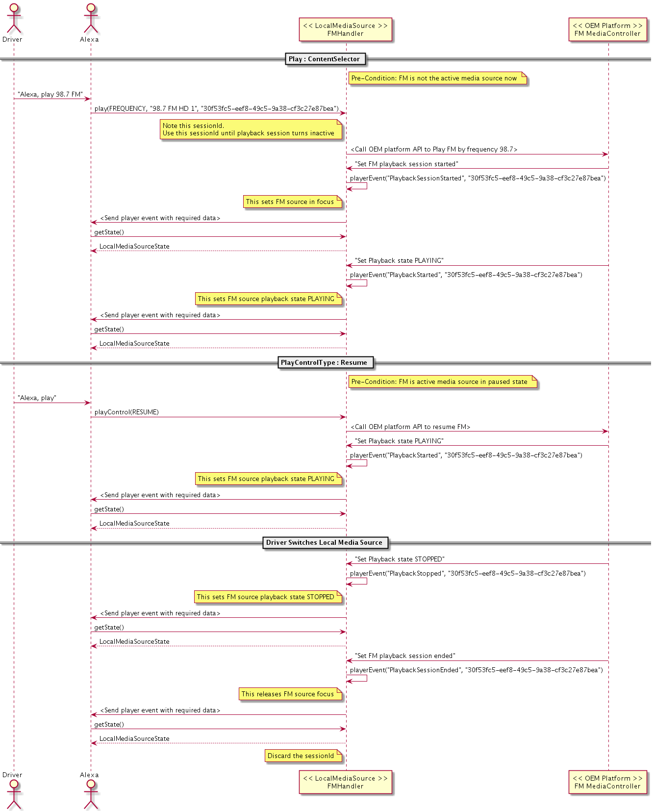

Alexa Module
Table of Contents
- Alexa module overview
- Configure the Alexa module
- Set up Alexa for the user
- Authorize the device with Authorization
- Start the out-of-box experience with DeviceSetup
- Update Device Settings with PropertyManager
- Provide user speech input to Alexa with SpeechRecognizer
- Invoke Alexa with tap-and-release
- Invoke Alexa with press-and-hold
- Invoke Alexa with voice using Amazonlite wake word engine
- Reduce data usage with audio encoding
- Play Alexa speech to the user with SpeechSynthesizer
- Track Alexa state changes with AlexaClient
- Render Alexa's attention state
- Monitor Alexa's connection status
- Monitor Alexa's authorization state
- Display cards on screen with TemplateRuntime
- Stream Alexa media content
- Play media with AudioPlayer
- View media metadata on screen with TemplateRuntime
- Press media playback control buttons with PlaybackController
- Adjust equalizer settings with EqualizerController
- Resume media playback at startup with MediaPlaybackRequestor
- Enable audio ducking for Alexa media content
- Control local media with LocalMediaSoure
- Starting Playback with Content Selection by Voice
- Controlling Playback by Voice
- Reporting Playback State
- Example Sequence Diagrams
- Control external media apps with ExternalMediaAdapter
- Control volume with AlexaSpeaker
- Set a custom volume range
- Manage timers, alarms, and reminders with Alerts
- Render notification indicators with Notifications
- Block notifications with DoNotDisturb
Alexa module overview
The Alexa Auto SDK Alexa module provides interfaces for standard Alexa features. The Engine handles steps to send events and sequence directives so you can focus on using the provided AASB messages to interact with Alexa.
Important!: If you are an Android developer, your application will use the Alexa Auto Client Service (AACS) as its foundation. AACS implements much of the core Auto SDK setup, abstracting it from your application and exposing only a necessary subset of the Auto SDK API in an Android-specific way. Some of the information presented in this documentation and documentation for other SDK modules might not pertain to your application exactly as written for cases in which AACS provides the implementation or further abstracts it, so keep this in mind while reading. Use the module documentation to understand the underlying layers of Auto SDK, if interested, and to reference the Engine configuration and AASB message definitions for the features you do need to build into your application yourself.
Important!: Not every section of this documented is updated to reflect the Auto SDK 4.0 MessageBroker message API. Some sections still include text, code samples, or diagrams that show deprecated platform intefaces rather than their corresponding AASB message interface equivalents. Your application will use the the AASB message interfaces with MessageBroker. This document will be fully updated in the next Auto SDK version. For each interface you use, refer to its individual AASB message reference documentation.
Configure the Alexa module
The Alexa module defines required and optional configuration objects that you include in the Engine configuration for your application. You can define the configuration objects in a file or construct them programatically with the relevant configuration factory functions.
Your application must provide the aace.alexa configuration in the same format as the example specified below. Alternatively, use the AlexaConfiguration factory functions to generate individual elements of this configuration.
{
"aace.alexa": {
"avsDeviceSDK": {
"deviceInfo": {
"clientId": "${CLIENT_ID}",
"productId": "${PRODUCT_ID}",
"deviceSerialNumber": "${DEVICE_SERIAL_NUMBER}",
"manufacturerName": "${MANUFACTURER_NAME}",
"description": "${DEVICE_DESCRIPTION}"
},
"libcurlUtils": {
"CURLOPT_CAPATH": "${CERTS_PATH}"
},
"miscDatabase": {
"databaseFilePath": "${DATA_PATH}/miscDatabase.db"
},
"certifiedSender": {
"databaseFilePath": "${DATA_PATH}/certifiedSender.db"
},
"alertsCapabilityAgent": {
"databaseFilePath": "${DATA_PATH}/alertsCapabilityAgent.db"
},
"notifications": {
"databaseFilePath": "${DATA_PATH}/notifications.db"
},
"capabilitiesDelegate": {
"databaseFilePath": "${DATA_PATH}/capabilitiesDatabase.db"
},
"deviceSettings": {
"databaseFilePath": "${DATA_PATH}/deviceSettings.db",
"defaultLocale":"en-US",
"defaultTimezone":"America/Vancouver"
}
},
"requestMediaPlayback": {
"mediaResumeThreshold": 20000
}
},
"aasb.alexa": {
"LocalMediaSource": {
"types": ["FM_RADIO", "AM_RADIO","BLUETOOTH", "USB", "SATELLITE_RADIO",
"LINE_IN", "COMPACT_DISC", "DAB", "DEFAULT"]
}
}
}
The deviceInfo field contains the details of the device. The fields libcurlUtils, miscDatabase, certifiedSender, alertsCapabilityAgent, notifications, and capabilitiesDelegate specify the respective database file paths.
The deviceSettings field specifies the settings on the device. The following list describes the settings:
databaseFilePathis the path to the SQLite database that stores persistent settings. The database will be created on initialization if it does not already exist.defaultLocalespecifies the default locale setting, which is Alexa's locale setting until updated on the device. The default value ofdefaultLocaleis “en-US”.localesspecifies the list of locales supported by the device. The default value is["en-US","en-GB","de-DE","en-IN","en-CA","ja-JP","en-AU","fr-FR","it-IT","es-ES","es-MX","fr-CA","es-US", "hi-IN", "pt-BR"].localeCombinationsspecifies the list of locale pairs available on a device that supports multi-locale mode. Through the Dynamic Language Switching feature, Alexa can communicate with the user of such device in languages specified in the locale pairs. In each pair, the first value is the primary locale, which Alexa uses most often when interacting with the user. The second value is the secondary locale, which specifies an additional language that Alexa uses when responding to an utterance in the corresponding language. For example, if ["en-US", "es-US"] is declared inlocaleCombinationsand the device specifies this pair as the current locale setting, Alexa primarily operates in English for the U.S. but can understand and respond to utterances in Spanish for the U.S., without requiring the device to update the locale setting.
By default, localeCombinations is a list of the following combinations, which are also the supported combinations as of 2021-02-02. It is possible for the default value to be different from the list of supported combinations in the future. For updates to the supported combinations, see the Alexa Voice Service documentation.
- ["en-US", "es-US"]
- ["es-US", "en-US"]
- ["en-IN", "hi-IN"]
- ["hi-IN", "en-IN"]
- ["en-CA", "fr-CA"]
- ["fr-CA", "en-CA"]
- ["en-US", "es-ES"]
- ["es-ES", "en-US"]
- ["en-US", "de-DE"]
- ["de-DE", "en-US"]
- ["en-US", "fr-FR"]
- ["fr-FR", "en-US"]
- ["en-US", "it-IT"]
- ["it-IT", "en-US"]
- ["en-US", "ja-JP"]
- ["ja-JP", "en-US"]
When a device operates in multi-locale mode, an application can select any locale pair in the list above as the locale setting if the following conditions are met:
- The device's primary locale setting is the first locale in the selected pair.
- The device also supports the secondary locale in the pair.
- The pair is specified in
localeCombinations.
Note: Dynamic Language Switching is only available in online mode.
Set up Alexa for the user
Authorize the device with Authorization
In order to make requests to Alexa, your application requires a Login with Amazon (LWA) access token. The access token grants the device access to Alexa on behalf of the signed-in user. As part of the user sign-in experience for your application, obtain access tokens for Alexa and provide them to the Engine as outlined in the Alexa Auto SDK Authorization.
Start the out-of-box experience with DeviceSetup
Note: This feature requires Amazon to allowlist your device. For help, contact your Amazon Solutions Architect or partner manager.
After the user signs in to your application during or after the out-of-box experience, the application starts the Engine and publishes the DeviceSetup.SetupCompleted message to notify Alexa that the setup is complete. The Engine publishes the DeviceSetup.SetupCompletedResponse to your application to indicate Alexa was notified successfully. In to the SetupCompleted event, Alexa starts an onboarding experience including a short first-time conversation with the user.
Because SetupCompleted triggers an onboarding experience, do not publish the message if the signed-in user has already seen the experience. The onboarding experience is for first-time users only and might differ for returning users.
Note: Do not publish the
SetupCompletedmessage if user is in Connectivity Mode or Preview Mode or if the user has disabled handsfree listening. PublishingSetupCompletedin these conditions causes undesireable user experience.
Update Device Settings with PropertyManager
After starting the Engine, use the PropertyManager to update any Alexa properties that you need to keep in sync at startup. See Alexa Auto SDK Property Manager for details.
Provide user speech input to Alexa with SpeechRecognizer
At startup time, the SpeechRecognizer component in the Engine opens an audio input channel of type VOICE for the application to provide the user speech to Alexa. The application subscribes to the AudioInput.StartAudioInput and AudioInput.StopAudioInput messages as outlined in Alexa Auto SDK Audio Channels. When the Engine expects to receive audio from the application, it prompts the application by publishing a StartAudioInput message with audioType VOICE. The application provides the voice audio input until the Engine publishes a StopAudioInput message.
The user decides when to speak to Alexa by invoking her with a tap-to-talk GUI button press, a push-to-talk physical button press, or—in vehicles supporting voice-initiated listening—an "Alexa" utterance.
Invoke Alexa with tap-and-release
For button press-and-release Alexa invocation, the application publishes the SpeechRecognizer.StartCapture message with initiator TAP_TO_TALK to tell the Engine that the user pressed the Alexa invocation button and wants to speak to Alexa. When requested, the application provides audio to the Engine until Alexa detects the end of the user's speech. The Engine publishes the SpeechRecognizer.EndOfSpeechDetected message to the application and requests the application to stop providing audio if no other Engine components require it.
Invoke Alexa with press-and-hold
For button press-and-hold Alexa invocation, the application publishes the SpeechRecognizer.StartCapture message with initiator HOLD_TO_TALK to tell the Engine that the user is holding down the Alexa invocation button and wants to speak to Alexa until releasing the button. When requested, the application provides audio to the Engine. When the user finishes speaking and releases the button, the application notifies the Engine by publishing the SpeechRecognizer.StopCapture message, and the Engine requests the application to stop providing audio if no other Engine components require it.
Invoke Alexa with voice using Amazonlite wake word engine
Note: To use the Amazonlite wake word engine in your application, contact your Amazon Solutions Architect or partner manager.
When the application uses the Amazonlite Auto SDK module for wake word detection, the application notifies the Engine when the user has handsfree listening enabled (i.e., privacy mode is off) by publishing the PropertyManager.SetProperty message with property set to aace.alexa.wakewordEnabled and value set to true. The Engine enables Amazonlite wake word detection and requests audio input from the application. The application provides audio to the Engine for continuous wake word detection until the application disables handsfree listening by setting the aace.alexa.wakewordEnabled property to false. After disabling Amazonlite wake word detection, the Engine requests the application to stop providing audio if there no other Engine components require it.
When Amazonlite detects the "Alexa" wake word in the continuous audio stream provided by the application, the Engine publishes the SpeechRecognizer.WakewordDetected message and starts an interaction similar to one triggered by tap-to-talk invocation. When Alexa detects the end of the user's speech, the Engine publishes the SpeechRecognizer.EndOfSpeechDetected message but keeps the audio input stream open for further wake word detection.
Reduce data usage with audio encoding
To save bandwidth when the Engine sends user speech to Alexa in SpeechRecognizer.Recognize events, you can configure the Engine to encode the audio with the Opus audio encoding format by adding the following object to your Engine configuration:
{
"aace.alexa": {
"speechRecognizer": {
"encoder": {
"name": "opus"
}
}
}
}
Recognize event.
Click to expand or collapse details— Generate the configuration programatically with the C++ factory function
If your application generates Engine configuration programmatically instead of using a JSON file, you can use the aace::alexa::config::AlexaConfiguration::createSpeechRecognizerConfig factory function to create the EngineConfiguration object.
#include <AACE/Alexa/AlexaConfiguration.h>
std::vector<std::shared_ptr<aace::core::config::EngineConfiguration>> configurations;
auto speechRecognizerConfig = aace::alexa::config::AlexaConfiguration::createSpeechRecognizerConfig("opus");
configurations.push_back(speechRecognizerConfig);
// ... create other EngineConfiguration objects and add them to configurations...
m_engine->configure(configurations);
Click to expand or collapse details— Generate the configuration programatically with the Java factory method
AACS is the recommended way to integrate Auto SDK for Android, so your application should provide the aacs.alexa configuration in the AACS configuration file. However, if your application does not use AACS, and it generates Engine configuration programmatically instead of using a JSON file, you can use the com.amazon.aace.alexa.config.AlexaConfiguration.createSpeechRecognizerConfig factory method to create the EngineConfiguration object.
import com.amazon.aace.alexa.config.AlexaConfiguration;
EngineConfifguration speechRecognizerConfig = AlexaConfiguration.createSpeechRecognizerConfig("opus");
mEngine.configure(new EngineConfiguration[]{
// ...add other EngineConfiguration objects...
speechRecognizerConfig
});
Play Alexa speech to the user with SpeechSynthesizer
At startup time, the SpeechSynthesizer component in the Engine opens an audio output channel of type TTS for the application to play Alexa speech responses to the user. SpeechSynthesizer has no messages of its own for the application to handle because it uses the standard audio output framework specified in the Core module. When Alexa responds to a user request with speech, the Engine publishes an AudioOutput.Prepare message with audioType TTS. The application uses the payload of the message to open the audio stream and buffer the audio data. The application plays the audio to the user when the Engine publishes an AudioOutput.Play message with matching token.
Track Alexa state changes with AlexaClient
Render Alexa's attention state
Your application can subscribe to the AlexaClient.DialogStateChanged message to be notified what state Alexa dialog is in (e.g., Alexa started listening to the user's speech or started speaking her response). This message helps your application render Alexa's attention state UI such as Voice Chrome and audio cues without having to derive these states by tracking your application's microphone and media player.
The following diagram shows how you might use the dialog state changes to provide Alexa attention feedback during an interaction.
Click to expand or collapse sequence diagram: Alexa invocation

Monitor Alexa's connection status
Your application can subscribe to the AlexaClient.ConnectionStatusChanged message to be notified when the status of the Engine's connection to Alexa has changed (e.g., the Engine lost connection to Alexa). You might use this information, for instance, to enable or disable certain functionality or display information to the user.
Monitor Alexa's authorization state
Your application can subscribe to the AlexaClient.AuthStateChanged message to be notified what state the Engine is in with respect to the user sign in. For example, the state is REFRESHED when the Engine has an access token.
Display cards on screen with TemplateRuntime
Alexa sends visual metadata (display card templates) for your device to display. When template information is received from Alexa, it is the responsibility of the platform implementation to handle the rendering of any UI with the information that is received from Alexa. There are two display card template types:
- The Template type provides visuals associated with a user request to accompany Alexa speech.
- The PlayerInfo type provides visuals associated with media playing through the
AudioPlayerinterface. This includes playback control buttons, which must be used with thePlaybackControllerinterface.
You can programmatically generate template runtime configuration using the aace::alexa::config::AlexaConfiguration::createTemplateRuntimeTimeoutConfig() factory method, or provide the equivalent JSON values in a configuration file.
{
"aace.alexa" {
"templateRuntimeCapabilityAgent": {
"displayCardTTSFinishedTimeout": <TIMEOUT_IN_MS>,
"displayCardAudioPlaybackFinishedTimeout": <TIMEOUT_IN_MS>,
"displayCardAudioPlaybackStoppedPausedTimeout": <TIMEOUT_IN_MS>
}
}
To implement a custom handler for GUI templates, extend the TemplateRuntime class:
#include <AACE/Alexa/TemplateRuntime.h>
class MyTemplateRuntime : public aace::alexa::TemplateRuntime {
public:
void renderTemplate( const std::string& payload, FocusState focusState ) override {
// handle rendering the template data specified in payload
}
void renderPlayerInfo( const std::string& payload, PlayerActivity audioPlayerState, std::chrono::milliseconds offset, FocusState focusState ) override {
// handle rendering the player info data specified in payload
}
};
...
// Register the platform interface with the Engine
engine->registerPlatformInterface( std::make_shared<MyTemplateRuntime>() );
Note: In the case of lists, it is the responsibility of the platform implementation to handle pagination. Alexa sends down the entire list as a JSON response and starts reading out the first five elements of the list. At the end of the first five elements, Alexa prompts the user whether or not to read the remaining elements from the list. If the user chooses to proceed with the remaining elements, Alexa sends down the entire list as a JSON response but starts reading from the sixth element onwards.
Stream Alexa media content
Play media with AudioPlayer
When an audio media stream is received from Alexa, it is the responsibility of the platform implementation to play the stream in a platform-specific media player. The aace::alexa::AudioPlayer class informs the platform of the changes in player state being tracked by the Engine. This can be used to update the platform GUI, for example.
To implement a custom handler for audio player output, extend the AudioPlayer class:
#include <AACE/Alexa/AudioPlayer.h>
class MyAudioPlayer : public aace::alexa::AudioPlayer {
public:
void playerActivityChanged( PlayerActivity state ) override {
// on state change, update playback control UI
}
};
...
// Register the platform interface with the Engine
auto myAudioPlayer = std::make_shared<MyAudioPlayer>();
engine->registerPlatformInterface( myAudioPlayer );
View media metadata on screen with TemplateRuntime
Your application subscribes to the TemplateRuntime.RenderPlayerInfo AASB message to receive metadata about the active media playback for you to display. See the TemplateRuntime AVS documentation for details about the payload.
Press media playback control buttons with PlaybackController
The Engine provides a platform interface aace::alexa::PlaybackController for the platform implementation to report on-device transport control button presses for media playing through Alexa. For example, if the user presses the on-screen pause button while listening to Amazon Music through Alexa's AudioPlayer interface, the platform implementation calls a PlaybackController method to report the button press to the Engine.
Note:
PlaybackControllermethod calls to manageAudioPlayer's state or playback queue proactively report button presses or the equivalent so that Alexa can react; they do not report changes to the playback state that happen locally first. The Alexa cloud manages the playback queue forAudioPlayercontent, so eachPlaybackControllermethod call is a request for Alexa to act on the user's local request. The result of the request will come as one or more method invocations on theAudioOutputassociated with the channel used forAudioPlayer.Note: If your implementation needs to stop
AudioPlayermedia in response to system events, such as audio focus transitions to audio playing outside the scope of the Auto SDK, usePlaybackControllerto notify the Engine of such changes. However, keep in mind that the expected usage of the interface does not change when it is used in this use case.Note:
PlaybackControlleronly controls media coming from Alexa, i.e. theAudioPlayer.PlaybackControllershould not be used with the expectation of controlling playback for non-media Alexa audio sources likeSpeechSynthesizeror Alexa-aware external media sources integrated withExternalMediaAdapterorLocalMediaSource. Additionally, calling aPlaybackControllermethod while audio is playing through another Alexa-aware external media source will produce unexpected results and is not recommended.
Whenever Alexa plays media through AudioPlayer, the Engine calls the platform interface method aace::alexa::TemplateRuntime::renderPlayerInfo() to provide visual metadata associated with the media that your implementation should render for the end user. The payload of this method includes descriptions of GUI controls to be displayed and the state in which to display them. When the user interacts with these on-screen controls, your implementation must use the PlaybackController interface to report the button presses to the Engine.
The table below maps the controls from the renderPlayerInfo() payload to the corresponding calls in PlaybackController.
| RenderPlayerInfo control name | PlaybackController |
|---|---|
| PlaybackButton | |
| "PLAY_PAUSE" | PLAY |
| "PLAY_PAUSE" | PAUSE |
| "NEXT" | NEXT |
| "PREVIOUS" | PREVIOUS |
| "SKIP_FORWARD" | SKIP_FORWARD |
| "SKIP_BACKWARD" | SKIP_BACKWARD |
| PlaybackToggle | |
| "SHUFFLE" | SHUFFLE |
| "LOOP" | LOOP |
| "REPEAT" | REPEAT |
| "THUMBS_UP" | THUMBS_UP |
| "THUMBS_DOWN" | THUMBS_DOWN |
To implement a custom handler for the playback controller, extend the PlaybackController class:
#include <AACE/Alexa/PlaybackController.h>
class MyPlaybackController : public aace::alexa::PlaybackController {
...
void platformPlayButtonPressed() { // called by some platform event
buttonPressed(PlaybackButton::PLAY);
}
...
void platformScrubForwardGUIButtonPressed(){ //called by the platform on an available GUI button event
buttonPressed(PlaybackButton::SKIP_FORWARD);
}
...
void platformShuffleGUIButtonPressed(){ //called by the platform on an available GUI toggle event
togglePressed(PlaybackToggle::SHUFFLE, true); //the action should send the value opposing the last playerinfo state for that toggle control
}
...
};
...
// Register the platform interface with the Engine
engine->registerPlatformInterface( std::make_shared<MyPlaybackController>() );
Adjust equalizer settings with EqualizerController
The Equalizer Controller enables Alexa voice control of the device's audio equalizer settings, which includes making gain level adjustments to any of the supported frequency bands ("BASS", "MIDRANGE", and/or "TREBLE") using the device's onboard audio processing.
The platform implementation is responsible for the following:
- Determining how each supported band affects the audio
- Mapping Alexa's equalizer bands to the bands supported on the device, if they do not directly correspond
- Scaling Alexa's level values as necessary so that each step corresponds to one decibel of amplitude gain on the device
- Applying equalization to only selected portions of the audio output so that Alexa's speech, alarms, etc. will not be affected
- Persisting settings across power cycles
You can programmatically generate Equalizer Controller configuration with details such as supported bands, default state, and decibel adjustment range using the aace::alexa::config::AlexaConfiguration::createEqualizerControllerConfig() factory method, or provide the equivalent JSON values in a configuration file.
{
"aace.alexa" {
"equalizer": {
"bands": {
"BASS": true,
"MIDRANGE": false,
"TREBLE": true
},
"defaultState": {
"bands": {
"BASS": 4,
"TREBLE": -1
}
},
"minLevel": -6,
"maxLevel": 6
}
}
}
// For example, 2 supported bands with amplitude gains ranging from -8dB to +8dB, each with a default of 0dB
auto eqConfig = aace::alexa::config::AlexaConfiguration::createEqualizerControllerConfig(
{EqualizerBand::BASS, EqualizerBand::TREBLE},
-8,
8,
{ {EqualizerBand::BASS, 0}, {EqualizerBand::TREBLE, 0} } );
engine->configure( { //other config objects..., eqConfig, ... } );
...
To implement a custom handler for Equalizer Controller, extend the EqualizerController class:
#include <AACE/Alexa/EqualizerController.h>
using EqualizerBand = aace::alexa::EqualizerController::EqualizerBand;
using EqualizerBandLevel = aace::alexa::EqualizerController::EqualizerBandLevel;
class MyEqualizerControllerHandler : public aace::alexa::EqualizerController {
public:
void setBandLevels( std::vector<EqualizerBandLevel> bandLevels ) override {
// Handle performing audio equalization on the device
// according to the provided band dB level settings
// This invocation may come from "Alexa, reset bass",
// "Alexa, reset my equalizer", "Alexa, increase treble", etc.
}
std::vector<EqualizerBandLevel> getBandLevels() override {
// Return the current band level settings on the device
return m_currentBandLevels;
}
};
...
// Register the platform interface with the Engine
auto m_equalizerController = std::make_shared<MyEqualizerControllerHandler>();
engine->registerPlatformInterface( m_equalizerController );
...
// If levels are adjusted using local on-device controls, call inherited methods to notify the Engine:
// To set a band to an absolute gain level in decibels
std::vector<EqualizerBandLevel> settings{ {EqualizerBand::BASS, 4} }; // Sets bass amplitude to +4dB
m_equalizerController->localSetBandLevels( settings );
// To make a relative adjustment to level settings
std::vector<EqualizerBandLevel> adjustments{ {EqualizerBand::BASS, -2} }; // Decreases bass gain by 2dB
m_equalizerController->localAdjustBandLevels( adjustments );
// To reset gain levels to the configured defaults (usually 0dB)
std::vector<EqualizerBand> bands{EqualizerBand::BASS, EqualizerBand::TREBLE}; // Resets bass and treble bands
m_equalizerController->localResetBands( bands );
Resume media playback at startup with MediaPlaybackRequestor
Alexa Media-Resume is a feature that helps Alexa play customers’ favorite content when they start their Alexa-enabled vehicles. Media-resume simplifies the content selection and playing process for customers, removing the need for them to use dash touch buttons or to ask Alexa.
To resume the media, Alexa auto SDK needs to send RequestMediaPlayback event with the Invocation reason AUTOMOTIVE_STARTUP. To implement a handler, extend the aace::alexa::MediaPlaybackRequestor class:
#include <AACE/Alexa/MediaPlaybackRequestor.h>
class MediaPlaybackRequestorHandler : public aace::alexa::MediaPlaybackRequestor {
public:
void mediaPlaybackResponse(MediaPlaybackRequestStatus mediaPlaybackRequestStatus) override {
//Handle the status change
}
};
...
// Register the platform interface with the Engine
engine->registerPlatformInterface( std::make_shared<MediaPlaybackRequestorHandler>());
requestMediaPlayback is the API to send the event to the cloud. This API needs InvocationReason and elapsedBootTime as input parameters.
mediaPlaybackResponse callback receives the status of the requestMediaPlayback API call asynchronously.
InvocationReason enum indicates the invocation reason for calling the event. AUTOMOTIVE_STARTUP represents a situation where platform automatically calls requestMediaPlayback API to automatically resume the media after infotainment system reboot. EXPLICIT_USER_ACTION represents resuming the media after explicit driver action by pressing the button or switch. Music resuming on EXPLICIT_USER_ACTION is not yet supported and this will be enabled in the future. Please check with your partner manager before using this action.
MediaPlaybackRequestStatus enum indicate the status of the requestMediaPlayback API call. SUCCESS means RequestMediaPlayback event is successfully reported to the cloud. FAILED_CAN_RETRY means requestMediaPlayback API call can not be processed because Alexa Auto SDK is not in the connected state but platform implementation can retry after some time. FAILED_TIMEOUT means threshold time is crossed and media can not be resumed now. Driver can play media by making a voice request. ERROR means API could not be called successfully and media can not be resumed.
This feature needs following configuration. Please contact to your partner manager for finalizing the threshold numbers.
"aace.alexa": {
"requestMediaPlayback": {
"mediaResumeThreshold": 30000
}
}
mediaResumeThreshold is the maximum time in milliseconds to receive the requestMediaPlayback API call from the platform implementation. Platform implementation should consider their boot time, time to initialize alexa and get connected to send the RequestMediaPlayback event successfully. Platform team and partner manager should try to keep this time minimum for the better user experience. Delayed media resume can surprise driver and result in driver distraction.
Note: This feature assumes that client platform maintains the media sessions and request individual media applications to resume playback if that media application was active and playing before the device shuts down.
Note:
requestMediaPlaybackAPI call expects a elapsed boot time i.e. number of milliseconds elapsed from the device boot up. This feature assumes that client platform provides the correct value using their proprietary methods. ThemediaResumeThresholdvalue andelapsedBootTimevalue are compared together for the guardrail condition.
Enable audio ducking for Alexa media content
Your application can configure the Engine to enable audio ducking for media that plays through AudioPlayer. See Alexa Auto SDK Audio Channels for details.
Control local media with LocalMediaSoure
The LocalMediaSource interface allows the platform to register a local media source by type (BLUETOOTH, USB, AM_RADIO, FM_RADIO, SATELLITE_RADIO, LINE_IN, COMPACT_DISC, SIRIUS_XM, DAB, and DEFAULT). Registering a local media source allows playback control of that source via Alexa (e.g. "Alexa, play the CD player"). It also enables playback initiation via Alexa by frequency, channel, or preset for relevant source types (e.g. "Alexa, play 98.7 FM").
DEFAULT media source is a generic media source that can be used for controlling any local media source on the OEM infotainment system. It is recommended to use DEFAULT media source for all local media except Alexa music, MACC-supported deep linked media players, and other registered Local Media Sources. DEFAULT media player can not be launched by name like "Alexa, Play CD player" but it can be used to control playback actions reported in the supportedOperations. For example, "Alexa, play" resumes the default player playback as long a the DEFAULT source is in focus.
The following is an example of registering a CD player local media source using type Source.COMPACT_DISC:
auto m_CDLocalMediaSource = std::make_shared<MyCDLocalMediaSource>( Source.COMPACT_DISC );
engine->registerPlatformInterface( m_CDLocalMediaSource );
To implement a custom handler for a CD player local media source extend the LocalMediaSource class:
#include <AACE/Alexa/LocalMediaSource.h>
class MyCDLocalMediaSource : public aace::alexa::LocalMediaSource {
public:
MyCDLocalMediaSource( LocalMediaSource::Source source ) {
m_source = source;
...
}
...
};
...
Starting Playback with Content Selection by Voice
The play() method is called when Alexa invokes play by ContentSelector type (FREQUENCY, CHANNEL, PRESET) for a radio local media source (AM_RADIO, FM_RADIO, SIRIUS_XM, DAB). The payload is a string that depends on the ContentSelector type and local media Source type (e.g., "1", "98.7 FM HD 1").
bool play( ContentSelector type, std::string payload, const std::string& sessionId ) override {
// play initiation for frequency, channel, or presets
...
}
The table below provides details about the supported ContentSelector types based on Source type:
| Source type | Supported content selector(s) |
|---|---|
| FM | FREQUENCY, PRESET |
| AM | FREQUENCY, PRESET |
| SXM | CHANNEL, PRESET |
| DAB | CHANNEL |
| DEFAULT | PRESET |
The supported ranges and increments for valid frequency, preset, and channel may vary depending on the region you are in. Contact your partner manager for more detailed information.
Note: The
DABchannel payload is the radio station name string. If supported, then the name string must be handled by the client's DAB implementation.
The play() method will not be invoked if a source cannot handle the specified ContentSelector type.
The DEFAULT Local Media Source handles "Alexa, play preset \AM_RADIO, FM_RADIO, SIRIUS_XM) actually corresponds to the preset. The meaning of the preset in the payload parameter of play(ContentSelector contentSelectorType, const std::string& payload, const std::string& sessionId)is determined by the DEFAULT platform implementation and should suit the needs of the vehicle's infotainment system, i.e. when the play() method is called, your implementation should map the preset to a preset that makes sense for the current context.
Note: The
GlobalPresetplatform interface is deprecated. UseDEFAULTLocalMediaSourceinstead.
Controlling Playback by Voice
The playControl() method is called with a PlayControlType(RESUME, PAUSE, STOP, NEXT, PREVIOUS, START_OVER, FAST_FORWARD, REWIND, ENABLE_REPEAT_ONE, ENABLE_REPEAT, DISABLE_REPEAT, ENABLE_SHUFFLE, DISABLE_SHUFFLE, FAVORITE, UNFAVORITE) when Alexa invokes a playback control on the local media source.
bool playControl( PlayControlType controlType ) override {
// handle the control type appropriately for CD player
return true;
}
Note: The
play()method is used to initiate playback with specified content selection, whereasplayControl(RESUME)is used to play or resume the source when content is not specified or not supported. E.g. FM receivesplay()when the user requests FM with a specific frequency ("Alexa, play 98.7 FM radio"), and USB receivesplayControl(RESUME)when the user requests playback with just the source name ("Alexa, play USB").
The seek() and adjustSeek() methods are invoked to seek the currently focused LocalMediaSource. These methods are only used by sources that are capable of seeking. seek() is for specifying an absolute offset, whereas adjustSeek() is for specifying a relative offset.
bool seek( long offset ) override {
// handle seeking CD player
}
...
bool adjustSeek( long offset ) override {
// handle adjusting seek for CD player
}
The volumeChanged() and mutedStateChanged() methods are invoked to change the volume and mute state of the currently focused local media player. volumeChanged() specifies the new volume. mutedStateChanged() specifies the new MutedState.
@Override
public boolean volumeChanged( float volume ) {
// handle volume change
}
...
@Override
public boolean mutedStateChanged( MutedState state ) {
// handle setting mute state
}
...
Reporting Playback Events
The LocalMediaSource interface provides methods playerEvent() and playerError() for your implementation to report events regarding the state of the playback session managed by your local source. Even though your local source manages its own playback, including reacting to on-device transport control button presses from the user and reacting appropriately to other non-Alexa audio events on the system, the playerEvent() and playerError() calls provide important information to the Engine:
-
The Engine may use calls to these methods to synchronize the state of your local source's playback session with Alexa.
-
The Engine may react to these calls according to the event name specified to update its internal view of your local source's state. Particular event names indicate if the source is focused on the system (meaning it has an active playback session) or if it is un-focused (meaning it is not in use and is brought into use only by further on-device interaction by the user or a user voice request to Alexa). The Engine uses this information to sync its internal focus management.
| playerEvent() event name | Description |
|---|---|
| "PlaybackSessionStarted" | The local media source is switched from the inactive to active media state or a new playback session has started, either from a GUI interaction or as a result of a user voice request to Alexa. The Engine considers the player active and in focus (although it may or may not yet be playing). |
| "PlaybackSessionEnded" | The local media source is switched from the active to inactive media state or an active playback session has ended. The player should no longer be playing or playable until a new session is started by GUI interaction or user voice request to Alexa. The Engine considers the player inactive and no longer in focus. |
| "PlaybackStarted" | During an active session, the local source has started to play or resumed from a paused state. |
| "PlaybackStopped" | During an active session, the player stopped, either as a result of a GUI interaction or a user voice request to Alexa. |
| playerError() event name | Description |
|---|---|
| "INTERNAL_ERROR" | During an active session, an internal error caused playback to stop. |
Both playerEvent() and playerError() are expected to provide the appropriate sessionId.
Call playerEvent("PlaybackSessionStarted", sessionId) to tell the Engine that the user brought the LocalMediaSource to the foreground with a GUI interaction. The Engine considers the source to have an active playback session, although it may or may not be playing yet. If no other Alexa media source is playing, utterances such as “Alexa, play” target this source. You must also call playerEvent("PlaybackSessionStarted", sessionId) when the source is brought into the foreground by a call to play() or playControl() as a result of a user voice request. Once the source starts playing, call playerEvent("PlaybackStarted", sessionId).
Call playerEvent("PlaybackSessionEnded", sessionId) to tell the Engine that the LocalMediaSource is no longer in the foreground, typically as a result of a GUI interaction from the user after the player is stopped. The Engine considers the source inactive or not in focus, and starting a new playback session for the source requires a further GUI interaction or user voice request to Alexa that targets the source by name.
class MyFMRadioLocalMediaSource : public aace::alexa::LocalMediaSource {
...
// public method in source handler
void setAlexaFocusForFMRadio( bool isFocused ) {
...
if (isFocused) {
...
// FM Radio begins playback independently of Alexa
playerEvent("PlaybackSessionStarted", m_sessionId);
} else {
...
// Notify Alexa that FM Radio is no longer the active media source on the device as a result of platform driven change
playerEvent("PlaybackSessionEnded", m_sessionId);
}
...
}
...
Note: Only one
LocalMediaSourcetype can have Alexa focus at a time.Note:
setFocus()andsetFocus(bool)methods are deprecated for theLocalMediaSourceplatform interface.playerEvent()with"PlaybackSessionStarted"or"PlaybackSessionEnded"should be used instead ofsetFocus(true)andsetFocus(false).
Please abide by following rules related to sessionId in your LocalMediaSource integration:
-
sessionIdis a universally unique identifier (UUID) generated according to the RFC 4122 specification. -
If a media source starts because of a call to
play(contentSelector, payload, sessionId)from the Engine, note thesessionIdparameter and use it in anyplayerEvent()calls until the session is inactive. -
If a media source starts for any other reason (e.g. a call to
playControl(RESUME)from the Engine, or user GUI interaction on the head unit), create a newsessionIdand use it in anyplayerEvent()calls until the session is inactive. -
A
sessionIdis always associated with one media source playback session, soUSB'ssessionIdshould be different thanCOMPACT_DISC'ssessionId. -
An individual
LocalMediaSourceshould maintain thesessionIdfor the whole cycle from playback session start to playback session end. -
For any "opening"
playerEvent()call for a particularsessionId(e.g."PlaybackSessionStarted","PlaybackStarted"), you must report a corresponding closing call (e.g."PlaybackStopped","PlaybackSessionEnded") at the appropriate time (i.e., when the source is stopped, switched, etc.)
Reporting Playback State
The getState() method is called to synchronize the local player's state with the cloud. This method is used to maintain correct state during startup and with every Alexa request. All relevant information should be added to the LocalMediaSourceState and returned.
Many fields of the LocalMediaSourceState are not required for local media source players. You should omit these as noted below.
LocalMediaSourceState getState() override {
LocalMediaSourceState stateToReturn = std::make_shared<LocalMediaSourceState>();
stateToReturn.playbackState.albumName = "mock albumName";
// fill in all required state information (see below)
return stateToReturn;
}
The following table describes the fields comprising a LocalMediaSourceState, which includes two sub-components: PlaybackState and SessionState.
| State | Type | Required | Notes |
|---|---|---|---|
| PlaybackState | |||
| state | String | Yes | "IDLE"/"STOPPED"/"PLAYING" |
| supportedOperations | SupportedPlaybackOperation[] | Yes | see SupportedPlaybackOperation |
| trackOffset | long | No | optional |
| shuffleEnabled | boolean | No | optional |
| repeatEnabled | boolean | No | optional |
| favorites | Favorites | No | see Favorites |
| type | String | Yes | must be set to "ExternalMediaPlayerMusicItem" |
| playbackSource | String | No | If available else use local player name |
| playbackSourceId | String | No | optional |
| trackName | String | No | If available else use local player name |
| trackId | String | No | empty |
| trackNumber | String | No | optional |
| artistName | String | No | optional |
| artistId | String | No | empty |
| albumName | String | No | optional |
| albumId | String | No | empty |
| tinyURL | String | No | optional |
| smallURL | String | No | optional |
| mediumURL | String | No | optional |
| largeURL | String | No | optional |
| coverId | String | No | empty |
| mediaProvider | String | No | optional |
| mediaType | MediaType | No | see MediaType |
| duration | long | No | optional |
| SessionsState | |||
| endpointId | String | No | empty |
| loggedIn | boolean | No | empty |
| userName | String | No | empty |
| isGuest | boolean | No | empty |
| launched | boolean | Yes | true if the source is enabled, false otherwise |
| active | boolean | No | empty |
| accessToken | String | No | empty |
| tokenRefreshInterval | long | No | empty |
| supportedContentSelectors | ContentSelector[] | No | see ContentSelector |
| spiVersion | String | Yes | must be "1.0" |
supportedOperations should list the operations that the local media source supports. Below is a list of all SupportedPlaybackOperation:
LocalMediaSource::SupportedPlaybackOperation::PLAY,
LocalMediaSource::SupportedPlaybackOperation::PAUSE,
LocalMediaSource::SupportedPlaybackOperation::STOP,
LocalMediaSource::SupportedPlaybackOperation::PREVIOUS,
LocalMediaSource::SupportedPlaybackOperation::NEXT,
LocalMediaSource::SupportedPlaybackOperation::ENABLE_SHUFFLE,
LocalMediaSource::SupportedPlaybackOperation::DISABLE_SHUFFLE,
LocalMediaSource::SupportedPlaybackOperation::ENABLE_REPEAT_ONE,
LocalMediaSource::SupportedPlaybackOperation::ENABLE_REPEAT,
LocalMediaSource::SupportedPlaybackOperation::DISABLE_REPEAT,
LocalMediaSource::SupportedPlaybackOperation::SEEK,
LocalMediaSource::SupportedPlaybackOperation::ADJUST_SEEK,
LocalMediaSource::SupportedPlaybackOperation::FAVORITE,
LocalMediaSource::SupportedPlaybackOperation::UNFAVORITE,
LocalMediaSource::SupportedPlaybackOperation::FAST_FORWARD,
LocalMediaSource::SupportedPlaybackOperation::REWIND,
LocalMediaSource::SupportedPlaybackOperation::START_OVER
Note: Currently PLAY/PAUSE/STOP are always supported for a source. Passing null allows ALL supported operations for the source.
supportedContentSelectors should list the content selection types the local source can support. Below is a table of valid pairs.
| Source | Supportable ContentSelector Values |
|---|---|
AM_RADIO |
PRESET, FREQUENCY |
FM_RADIO |
PRESET, FREQUENCY |
SIRIUS_XM |
PRESET, CHANNEL |
DEFAULT |
PRESET |
launched specifies whether the source is enabled. The player is disabled for use with Alexa when this value is false, such as when a removable source like USB is disconnected.
Example Sequence Diagrams
The following diagrams show examples of Local Media Source usage:
1. Starting FM by voice

2. Switching from FM to DEFAULT media source with GUI

3. Switching between different DEFAULT sources

Control external media apps with ExternalMediaAdapter
The External Media Player (EMP) Adapter allows you to declare and use external media application sources in your application. In order to interface with the EMP Adapter, you must use one of the following:
- A media connection client to interface the EMP Adapter to the external app. AACS provides an app component called the Media App Command and Control (MACC) client that provides most of the deep-linking integration specified below. The AACS Sample App supports an example using the Media App Command and Control (MACC) client to play the Android Spotify app.
- An embedded media app. For information about external embedded media app solutions, contact your SA or Partner Manager.
Note: If the media app service requires additional customer experience details, incorporate the requirement in your implementation. For example, if the provider requires your application to show the provider's logo in a particular way, modify the implementation to meet the requirement.
When advised by your SA or Partner Manager, configure the External Media Player Adapter to the device's capabilities. See aace::alexa::config::AlexaConfiguration::createExternalMediaPlayerConfig for details on configuring the supported agent, or provide the equivalent JSON values in a configuration file.
{
"aace.alexa": {
"externalMediaPlayer": {
"agent": "<agent>"
}
}
You must register and implement each ExternalMediaAdapter (along with its associated external client or library). After the engine establishes a connection to the Alexa service, you can run discovery to validate each external media application. You can report discovered external media players by calling reportDiscoveredPlayers() at any point during runtime. When the Alexa service recognizes the player, you will get a call to the authorize() method including the player's authorization status. Both the reportDiscoveredPlayers() method and the authorize() method can contain one or more players in their JSON payloads. Validating the application enables Alexa to exercise playback control over the registered source type.
The login() and logout() methods inform AVS of login state changes, if applicable. If your application has the ability to handle cloud-based login and logout, you should also call the loginComplete() and logoutComplete() methods where appropriate.
When the user makes an Alexa voice request (for example, "Play Spotify"), the play() method is invoked. This method contains various parameters, including the player id of the player to which the playback information should be routed.
Whether through voice or GUI event, the playControl() method is called with the relevant PlayControlType. Similar to play() the control should be routed to the appropriate player.
The PlayControlType is determined by player's supportedOperations, which are specified by your implementation in the return value of getState().
The ExternalMediaAdapter interface provides methods playerEvent() and playerError() for your implementation to report events regarding the state of the playback session managed by your external player. Even though your player manages its own playback, including reacting to on-device transport control button presses from the user and reacting appropriately to other non-Alexa audio events on the system, the playerEvent() and playerError() calls provide important information to the Engine:
-
The Engine may use calls to these methods to synchronize the state of your player’s playback session with Alexa.
-
The Engine may react to these calls according to the event name specified to update its internal view of your player’s state. Particular event names indicate if the player is focused on the system (meaning it has an active playback session) or if it is un-focused (meaning it is not in use and is brought into use only by further on-device interaction by the user or a user voice request to Alexa). The Engine uses this information to sync its internal focus management.
The tables below describe each supported event name and what it means to the Engine. Usage of these events depends on the particular type of player controlled by the ExternalMediaAdapter instance, so contact your Solutions Architect (SA) or Partner Manager for guidance regarding supported embedded and external app solutions.
| playerEvent() event name | Description |
|---|---|
| "PlaybackSessionStarted" | A new playback session has started, either from a GUI interaction or as a result of a user voice request to Alexa. The Engine considers the player active and in focus (although it may or may not yet be playing). |
| "PlaybackStarted" | During an active session, the player has started to play or resumed from a paused state. The Engine considers the player active and in focus. |
| "TrackChanged" | During an active session, one track has ended and another has started. The Engine uses this primarily for state reporting. |
| "PlaybackNext" | During an active session, the player skipped from one track to the next track, either as a result of a GUI interaction or a user voice request to Alexa. The Engine uses this primarily for state reporting. |
| "PlaybackPrevious" | During an active session, the player skipped from one track to the previous track, either as a result of a GUI interaction or a user voice request to Alexa. The Engine uses this primarily for state reporting. |
| "PlayModeChanged" | During an active session, some user setting for the track or playback session changed, such as the favorite setting or the shuffle mode. The Engine uses this primarily for state reporting. |
| "PlaybackStopped" | During an active session, the player has paused or stopped, either as a result of a GUI interaction or a user voice request to Alexa. The Engine considers the player active and in focus, just not currently playing. User voice requests to resume still control the player. |
| "PlaybackSessionEnded" | An active playback session has ended. The player should no longer be playing or playable until a new session is started by GUI interaction or user voice request to Alexa. The Engine considers the player inactive and no longer in focus. |
| playerError() event name | Description |
|---|---|
| "INTERNAL_ERROR" | Any fatal player error has occurred |
| "UNKNOWN_ERROR" | An unknown error occurred |
| "UNPLAYABLE_BY_AUTHORIZATION" | The media couldn't be played due to an unauthorized account |
| "UNPLAYABLE_BY_STREAM_CONCURRENCY" | The media couldn't be played due to the number of accounts currently streaming |
| "UNPLAYABLE_BY_ACCOUNT" | The media couldn't be played due to the account type |
| "UNPLAYABLE_BY_REGION" | The media couldn't be played due to the current region |
| "UNPLAYABLE_BY_PARENTAL_CONTROL" | The media couldn't be played due to parental settings |
| "UNPLAYABLE_BY_SUBSCRIPTION" | The media couldn't be played due to the subscription type |
| "OPERATION_REJECTED_UNINTERRUPTIBLE" | The operation could not be performed due to non interruptible media |
| "OPERATION_REJECTED_END_OF_QUEUE" | The operation could not be performed due to the end of media being reached |
| "OPERATION_UNSUPPORTED" | The operation was not supported |
| "OPERATION_REJECTED_SKIP_LIMIT" | The operation failed because a skip limit was reached |
| "PLAYER_UNKNOWN" | An unknown player was detected |
| "PLAYER_NOT_FOUND" | The player was not discovered |
| "PLAYER_CONNECTION_REJECTED" | The connection to the player failed |
| "PLAYER_CONNECTION_TIMEOUT" | The connection to the player timed out |
The seek() and adjustSeek() methods are invokable via Alexa if the currently in-focus external player supports them. seek() specifies an absolute offset, whereas adjustSeek() specifies a relative offset.
The volumeChanged() and mutedStateChanged() methods are invoked to change the volume and mute state of the currently-focused external player. volumeChanged() specifies the new volume. mutedStateChanged() specifies the new MutedState.
The getState() method is called to synchronize the external player's state with the cloud. This method is used to maintain correct state during startup, and after every Alexa request.
You construct the ExternalMediaAdapterState object using the data taken from the media app connection client or embedded player app (associated via localPlayerId) and return the state information.
The following table describes the fields comprising a ExternalMediaAdapterState, which includes two sub-components: PlaybackState, and SessionState.
| State | Type | Required | Notes |
|---|---|---|---|
| PlaybackState | |||
| state | String | Yes | "IDLE"/"STOPPED"/"PLAYING" |
| supportedOperations | SupportedPlaybackOperation[] | Yes | see SupportedOperation |
| trackOffset | long | No | optional |
| shuffleEnabled | boolean | Yes | report shuffle status |
| repeatEnabled | boolean | Yes | report repeat status |
| favorites | Favorites | No | see Favorites |
| type | String | Yes | must be set as "ExternalMediaPlayerMusicItem" |
| playbackSource | String | No | If available else use local player name |
| playbackSourceId | String | No | empty |
| trackName | String | No | If available else use local player name |
| trackId | String | No | empty |
| trackNumber | String | No | optional |
| artistName | String | No | optional |
| artistId | String | No | empty |
| albumName | String | No | optional |
| albumId | String | No | empty |
| tinyURL | String | No | optional |
| smallURL | String | No | optional |
| mediumURL | String | No | optional |
| largeURL | String | No | optional |
| coverId | String | No | empty |
| mediaProvider | String | No | optional |
| mediaType | MediaType | Yes | see MediaType |
| duration | long | No | optional |
| SessionsState | |||
| endpointId | String | No | empty |
| loggedIn | boolean | No | empty |
| userName | String | No | empty |
| isGuest | boolean | No | empty |
| launched | boolean | Yes | true if the source is enabled, false otherwise |
| active | boolean | Yes | true if the application is in an active state |
| accessToken | String | No | empty |
| tokenRefreshInterval | long | No | empty |
| playerCookie | String | No | A player may declare arbitrary information for itself |
| spiVersion | String | Yes | must be set as "1.0" |
supportedOperations should be a list of the operations that the external media adapter supports. Below is a list of all possible supportedOperations.
SupportedPlaybackOperation.PLAY,
SupportedPlaybackOperation.PAUSE,
SupportedPlaybackOperation.STOP,
SupportedPlaybackOperation.PREVIOUS,
SupportedPlaybackOperation.NEXT,
SupportedPlaybackOperation.ENABLE_SHUFFLE,
SupportedPlaybackOperation.DISABLE_SHUFFLE,
SupportedPlaybackOperation.ENABLE_REPEAT_ONE,
SupportedPlaybackOperation.ENABLE_REPEAT,
SupportedPlaybackOperation.DISABLE_REPEAT,
SupportedPlaybackOperation.SEEK,
SupportedPlaybackOperation.ADJUST_SEEK,
SupportedPlaybackOperation.FAVORITE,
SupportedPlaybackOperation.UNFAVORITE,
SupportedPlaybackOperation.FAST_FORWARD,
SupportedPlaybackOperation.REWIND,
SupportedPlaybackOperation.START_OVER
Note: Currently PLAY/PAUSE/STOP will always be supported for a source. Passing null will allow ALL supported operations for the source.
Control volume with AlexaSpeaker
The Alexa service keeps track of two device volume types: ALEXA_VOLUME and ALERTS_VOLUME. The aace::alexa::AlexaSpeaker class should be implemented by the platform to both set the volume and mute state of these two speaker types and allow the user to set the volume and mute state of these two speaker types locally via GUI if applicable.
SpeakerManager is a configurable option, enabled by default. When not enabled, user requests to change the volume or mute now have an appropriate Alexa response, e.g. "Sorry, I can't control the volume on your device".
You can programmatically generate speaker manager configuration using the aace::alexa::config::AlexaConfiguration::createSpeakerManagerConfig() factory method, or provide the equivalent JSON values in a configuration file.
{
"aace.alexa": {
"speakerManager": {
"enabled": false
}
}
}
Set a custom volume range
You can use a custom volume control to support an Alexa device's native input volume range. By default, Alexa supports voice utterances that specify volume values between 0 and 10, but some devices may support a different range (i.e. 0 to 100). By placing on Amazon's allow list your Alexa device's volume range for your target platform, you can specify input volume levels per your device's range. Your device's input volume range is then mapped appropriately to the Alexa volume range.
Contact your Alexa Auto Solution Architect (SA) for help with allow lists. Placing a device on the allow list requires the following parameters:
- DeviceTypeID:
- Min:
- Max:
This does not impact the range used in the directives to the device. You must continue to use the SDK 0-100 volume range used by AudioOutput and AlexaSpeaker and map these values to the correct range in your implementation.
Manage timers, alarms, and reminders with Alerts
When an alert is received from Alexa, it is the responsibility of the platform implementation to play the alert sounds in a platform-specific media player. See the AVS Alerts interface documentation for more information about alerts. The state of the alert is also made available for the platform to react to. The playback is handled by whichever audio channel is assigned to the ALERT type.
To implement a custom handler for alerts, extend the Alerts class:
#include <AACE/Alexa/Alerts.h>
class MyAlerts : public aace::alexa::Alerts {
public:
void MyAlerts::alertStateChanged( const std::string& alertToken, AlertState state, const std::string& reason ) override {
//handle the alert state change
}
void MyAlerts::alertCreated( const std::string& alertToken, const std::string& detailedInfo ) override {
//handle the alert detailed info when alert is created (optional)
/*
* JSON string detailedInfo :
* {
* "time" : <String>
* "type" : <String>
* "label" : <String>
* }
*/
}
void MyAlerts::alertDeleted( const std::string& alertToken ) override {
//handle the alert when alert is deleted (optional)
}
};
...
// Register the platform interface with the Engine
auto myAlertsMediaPlayer = std::make_shared<MyMediaPlayer>(...);
auto myAlertsSpeaker = std::make_shared<MySpeaker>(...);
auto myAlerts = std::make_shared<MyAlerts>(myAudioPlayerMediaPlayer, myAudioPlayerSpeaker);
engine->registerPlatformInterface( myAlerts );
Render notification indicators with Notifications
It is the responsibility of the platform implementation to provide a visual indication to the user when notifications (for example, package shipment notifications, notifications from skills, etc.) are available from Alexa. See the AVS Notifications interface documentation for more information about notifications. The Engine uses the registered Notifications implementation to notify you when a notification indicator should be displayed or removed. It does not give any information about the notifications. Audio playback for the notification is handled by whichever audio channel is assigned to the NOTIFICATION type.
To implement a custom handler for Notifications extend the Notifications class:
#include <AACE/Alexa/Notifications.h>
using IndicatorState = aace::alexa::Notifications::IndicatorState;
class MyNotificationsHandler : public aace::alexa::Notifications {
public:
void setIndicator( IndicatorState state ) override {
// set your notifications indicator!
}
};
...
// Register the platform interface with the Engine
auto m_notificationsHandler = std::make_shared<MyNotificationsHandler>();
engine->registerPlatformInterface(m_notificationsHandler);
Block notifications with DoNotDisturb
The DoNotDisturb (DND) interface allows users to block all incoming notifications, announcements, and calls to their devices, and to set daily recurring schedules that turn DND off and on. For details, see the DND Interface documentation. The Engine uses the registered DND implementation to notify the client when DND has been set or unset. A user's voice request to change the DND state triggers audio playback, but no audio playback occurs when a user sets the DND state using the touch screen.
To implement a custom handler for DND extend the DoNotDisturb class:
#include <AACE/Alexa/DoNotDisturb>
class MyDoNotDisturbHandler : public aace::alexa::DoNotDisturb {
public:
void setDoNotDisturb( bool doNotDisturb ) override {
// set your DoNotDisturb indicator
}
// on user GUI setting change
...
bool doNotDisturb = userSetState;
doNotDisturbChanged(doNotDisturb);
...
};
...
// Register the platform interface with the Engine
auto m_doNotDisturbHandler = std::make_shared<MyDoNotDisturbHandler>();
engine->registerPlatformInterface(m_doNotDisturbHandler);